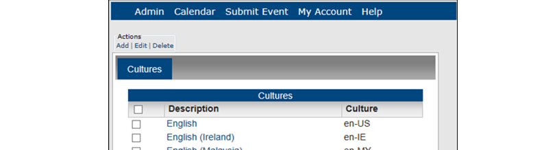
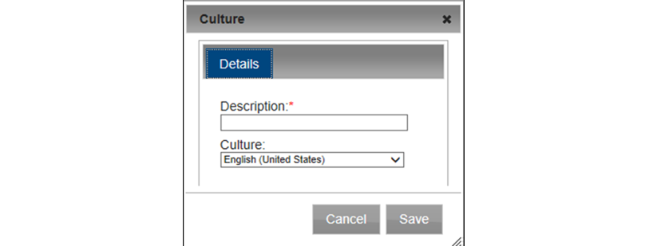

Cultures are used if you use language translation: a culture is the language (which you provide) into which the menu text, menu items, field labels, and help text will be translated on your Master Calendar site. This topic guides you in working with these settings.
From the Admin Panel, navigate to Admin > Configuration > Cultures. The Cultures page opens, listing all the cultures that are currently configured in your Master Calendar database.

To add a culture, under Actions, click Add. The Culture dialog box opens, where you can name or describe the culture that you are configuring and select the appropriate culture. The default value is English (United States).

Click OK in the message. The message closes and the newly configured culture is displayed on the Cultures page.
After you configure a culture, you must manually enter the translations for menus (main menu text and options, including user-defined options) and help text. See Also: Entering translations for menu text and options and Customize Help Text in Master Calendar. To enter translations for labels, you must contact support@emssoftware.com. Also, the guest’s or user’s Browser language must be set to the appropriate culture (language) to display these translations.
Under Actions, click Edit. The Culture dialog box opens. The dialog box lists the selected culture and its description. Only the description is editable.
If you selected the wrong culture for a culture description, then you must delete the culture, and add it again.